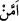

o köle beraberinde bir mikdar kar ile birlikte geri dönmüştür. Kendisine sorulur:
“Hükümdarın canının kar istediğini nasıl anladın?” Köle cevap verir. “Çünkü o, karın
bulunduğu zirveye baktı. Hükümdarların herhangi bir şeye bakışları boşuna olamaz.” Bu
cevabı duyan hükümdar orada bulunanlara dönerek: “İşte bu yüzden onu kendime yakın
kılıyor ve sizlerden daha çok ona öncelik veriyorum” der ve sözüne şöyle devam eder:
“Sizler kendi nefislerinizle meşgulsunuz. Oysa bu, benim ahvâlimi murâkabe edip
gözetmekle meşguldur.”
et-Te’vilatü’n-necmiyye’de yukardaki âyet-i kerîme şöyle tefsir olunur: Allah Teâlâ
burada yaratılmış ulvi ruhların cesedlerden iki bin yıl daha önce uçtuklarına işâret
ediyor. Bu ulvi ruhlar, ruhânî kanatlarını açarak, cismânî başlarını kapatarak, heyûlâni
âlemden uçmaktadırlar. Bu ruhları “Hafîz” ismini kapsayan “Rahmân”dan başka hiçbir
kimse tutamaz. Rahman olan Allah bu isimle o ruhları kudret semâsında tutar. O her şeyi
görür. Garib olan eşyayı nasıl yaratacağını, acayip olan işleri nasıl çekip çevireceğini
bilir.
20. Rahmân olan Allah’a karşı şu size yardım edecek askerleriniz hani kimlerdir?
İnkârcılar ancak derin bir gaflet içinde bulunmaktadırlar.
“Rahman olan Allah’a karşı şu size yardım edecek askerleriniz hani kimlerdir?”
Âyette yer alan “
/emmen” kelimesinin aslı “em+men”dir. Burada “em” munkatıa
olup “bel” kelimesi ile takdir olunmuştur. Anlam itibariyle bu kelime müşâhede ettikleri
Allah’ın kudretinin eserlerinin acayip görüntülerini ortaya koyan uçma olayı üzerinde
düşünmeyi terkettikleri için azarlama hâlinden zikredilen hususlarla onları susturmaya
ve bu konuda daha da sıkıştırmaya geçmektedir. Âyetteki istifham, onların Rahmân’a
karşı yardımcılarının kim olduğunu göstermelerine yöneliktir. Böylece bu istifham ile
böyle bir yardımcıyı göstermekten âciz duruma düşeceklerini ortaya koyarak
susturulmaları hedeflenmektedir. Âyette geçen “
/yensurukum” kelimesi “cünd”
kelimesinin lafzı itibara alınmak sûretiyle sıfatı olmaktadır. “
/Cünd” kelimesi ise
“savaş için hazırlanmış ordu” demektir.
Bu açıklamaların ışığı altında âyet-i kerîmenin mânâsı; “kimdir bu sizin zannınıza
göre ilâhlarınızdan ve başkalarından olmak üzere sizlere azap ve âfet geldiğinde
Rahmân’ın yardımını aşıp da size yardım edecek olan ordu ve askerler?” şeklindedir.
“Size yardım edecek” kısmı “Allah Teâlâ’nın yardımı olmaksızın size yardım edecek”
şeklinde olabileceği gibi, “Allah katından gelen azâba karşı size yardım edecek”